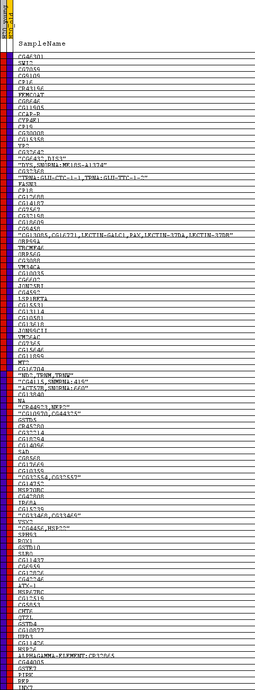
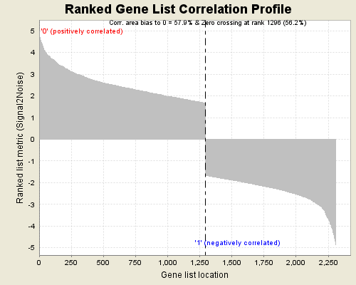

Fig 1: heat_map
Heat Map of the top 50 features for each phenotype in H2O_young_old_expression_young_old_expression.H2O_young_old.cls.txt#young_versus_old

Fig 2: Ranked Gene List Correlation Profile
Ranked list correlations for H2O_young_old_expression_young_old_expression.H2O_young_old.cls.txt#young_versus_old